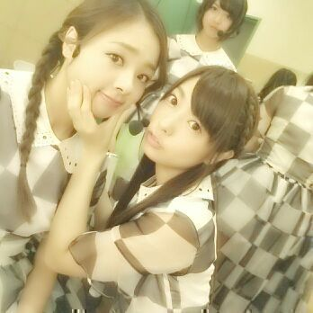
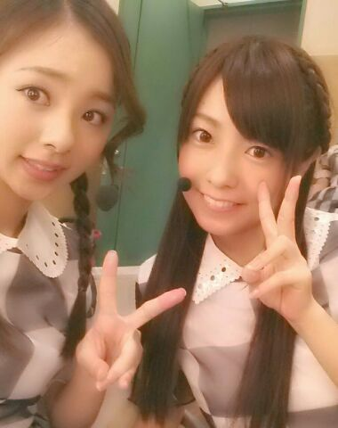

Hi☆//ぴよぴよ
ろってぃ-だよ\(・ω・)/
ごめんねぇ゜゜(´O｀)°゜
珍ちく ３日間位あけての更新です♪
仕事が一旦落ち着いて
久しぶりのオフゥ〜って感じで
Rottyは喋ったり歌ったり
食べたり寝たりと十分にゆっくりでき
元気モリモリになってきました )))
今日からまた引き締めて
いきまっしょう (*´ω｀*)
ムニ。

お顔むにむに。
まにまにむにえる。
ゆったんにお尻触ってもらったら
「まひろのお尻は小さい！！」
って言われた 。
ゆったん好みのお尻では
なかったのか...(´；ω；｀)
でも、大きいより、
小さいといわれるほうが
嬉しゅうキモチよ ♪あは
ちゃんとしちゅもん返しも
しなきゃ〜やね(*´▽`)
☆ろってぃ-雷は平気
★平気ぢゃあないよぉぉ。
昨日新幹線で外眺めてたら
目の前に落ちる雷見てしもーた。
すごい光や。
☆ろってぃ-は梅干し好き？
★好きよ〜(о´∀`о)
おいちーよね。
しゅっぱいしゅっぱい。
☆Rottyは何か意識して食べてんの？
★量はもりもりいっちゃうから
食べる順番かな？
野菜やスープ類をいれてから
他責めてく感じ(*^^*)
☆足の押し付け跡治ったかな？
★すぐ治ったから良かった〜
☆乃木ここ見たけど
いつもあんな感じでダンスの練習
してんの？
★ごめんねぇ、
リハーサル中はリハーサルに
集中しちゃって
カメラの方に全然目がいかなかった
(T-T)
調度あの日
別の仕事でダンスの振り付けを
教わることができなくて
メンバーに聞いたりで
必死で覚えてたんだよね 笑
☆なんかろってぃ-に会いに行って
しまうのはなぜですか？
★赤い糸で繋がってるのかな？
☆live・個握で体調は大丈夫ですか？
★って思われがちやけど
まひろ しゅっごい元気なの\(*・ω・*)/
☆やっぱり野菜たっぷり
メニューがいいんぢゃない ？
★うんっ、やっぱ野菜たっぷり
使った料理大好きや！！！笑
しちゅもん返しまたするからねん♪

あらまぁ〜(о´∀`о)
もう雷ゴロゴロやーよ。
アメーバまひろ担当日やから
更新しときますね〜(о´∀`о)
んぢゃあ また更新しまーす。
ろってぃ-でした のし☆